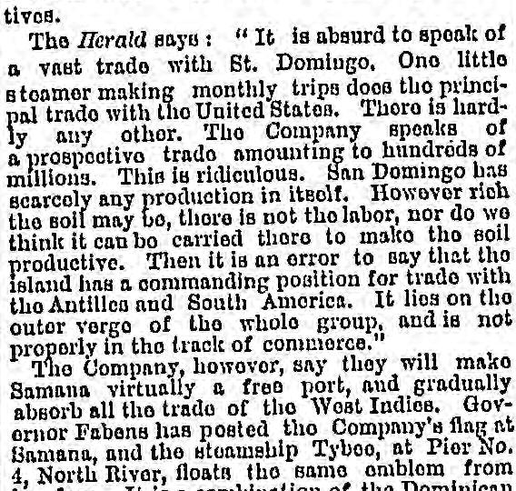
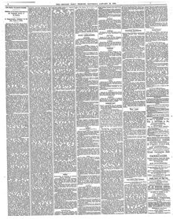

It lies on the outer verge of tbo whole group, and is not properly in the track of commerce."Yace en el borde exterior de todo el grupo, y no está propiamente en la ruta del comercio.»
Chicago Daily Tribune. Chicago, Ill., January 18, 1873. Page 8. Published by Tribune Co. A daily newspaper, 1872–1963.Chicago Daily Tribune. Chicago, Ill., 18 de enero de 1873. Página 8. Publicado por Tribune Co. Periódico diario, 1872–1963. View the originalVer el original


See the full pageVer la página completaThe newspaper reported that a company intended to make Samana a free port and that Governor Fabens posted the company's flag—a combination of the Dominican and United States flags—at Baniana. It also noted that negotiations with Baez for the purchase of Samana lasted two weeks, were conducted in Spanish, and were followed by a grand ball given by the President to honor the commissioners after the treaty was ratified.El rotativo reportó que una empresa proyectaba convertir a Samaná en puerto libre y que el gobernador Fabens izó el estandarte societario —una combinación de los pabellones dominicano y estadounidense— en Baniana. Apuntó también que las tratativas con Báez para el arrendamiento de Samaná se prolongaron por dos semanas, se ventilaron en lengua española y culminaron con un lucido sarao ofrecido por el mandatario para agasajar a los comisionados tras ratificarse el convenio.
FULL TEXT:TEXTO COMPLETO:
Chicago Daily Tribune January 18, 187318 de enero de 1873
The Herald says: "It is absurd to speak of a vast trade with St. Domingo. One little steamer making monthly trips does the principal trade with the United States. There is hardly any other. The Company speaks of a prospective trade amounting to hundreds of millions. This is ridiculous. San Domingo has scarcely any production in itself. However rich the soil may be, there is not the labor, nor do we think it can be carried there to make the soil productive. Then it is an error to say that the island has a commanding position for trade with the Antilles and South America. It lies on the outer verge of the whole group, and is not properly in the track of commerce."El Herald dice: «Es absurdo hablar de un vasto comercio con Santo Domingo. Un pequeño vapor que hace viajes mensuales realiza el principal comercio con los Estados Unidos. Apenas hay otro. La Compañía habla de un comercio prospectivo que asciende a cientos de millones. Esto es ridículo. Santo Domingo apenas tiene producción en sí mismo. Por rica que la tierra pueda ser, no hay la mano de obra, ni creemos que pueda llevarse allí para hacer la tierra productiva. Luego es un error decir que la isla tiene una posición dominante para el comercio con las Antillas y América del Sur. Yace en el borde exterior de todo el grupo, y no está propiamente en la ruta del comercio.»
The Company, however, say they will make Samana virtually a free port, and gradually absorb all the trade of the West Indies. Governor Fabens has posted the Company's flag at Samana, and the steamship Tybee, at Pier No. 4, North River, floats the same emblem from her fore. It is a combination of the Dominican and United States flags. From edge to edge across its centre, lengthwise and crosswise, is a broad white band, dividing the flag into four other parts. In the upper left-hand corner is the union jack, a blue field and white stars. The upper right-hand corner is red, the lower right blue, and the lower left-hand corner red. The negotiations with Baez for the purchase of Samana extended through two weeks. Audiences were given daily in the Executive Palace, the hours being from 8:30 a. m. to 4:30 p. m., with an intermission for dinner. The negotiations were conducted in Spanish, and during their progress the Commissioners had no relations of intimacy with the members of the Government, living on board the ship, and not seeing the Dominicans except in business hours. When the negotiations were completed, and the treaty ratified, the President gave a grand ball in honor of the Commissioners, who returned the compliment by a dinner on the Tybee.La Compañía, sin embargo, dice que hará de Samaná virtualmente un puerto libre, y absorberá gradualmente todo el comercio de las Indias Occidentales. El gobernador Fabens ha izado la bandera de la Compañía en Samaná, y el vapor Tybee, en el Muelle N.º 4, North River, despliega el mismo emblema desde su proa. Es una combinación de las banderas dominicana y de los Estados Unidos. De borde a borde a través de su centro, a lo largo y a lo ancho, hay una ancha banda blanca, que divide la bandera en otras cuatro partes. En la esquina superior izquierda está el pabellón de la unión, un campo azul y estrellas blancas. La esquina superior derecha es roja, la inferior derecha azul, y la esquina inferior izquierda roja. Las negociaciones con Báez para la compra de Samaná se extendieron por dos semanas. Se dieron audiencias diariamente en el Palacio Ejecutivo, siendo las horas de 8:30 a. m. a 4:30 p. m., con un intermedio para la comida. Las negociaciones se condujeron en español, y durante su progreso los Comisionados no tuvieron relaciones de intimidad con los miembros del Gobierno, viviendo a bordo del buque, y no viendo a los dominicanos excepto en horas de negocio. Cuando las negociaciones se completaron, y el tratado fue ratificado, el Presidente dio un gran baile en honor de los Comisionados, quienes devolvieron el cumplido con una cena en el Tybee.
Several times the negotiations were nearly broken off. On one occasion the Commissioners retired to their steamer, got up steam, blew their whistle, and were nearly off, and then they were recalled. Whether the Dominicans were frightened by the steam whistle is not known, but the negotiations were resumed, and finally the President and his Ministers ratified the contract. It was then referred to the Senate, which comprises nine members. The Senate discussed the Convention several days, during which the members of the Government were invited before that body to explain the various provisions of the treaty. The result of these deliberations was the ratification by the Senate. That branch of the Government agreed with the Executive, that a treaty, which was such an innovation on the laws of the country, and which granted such unusual and extraordinary powers to a private company, should not be finally and wholly carried into effect without its ratification by the people at the polls. This has doubtless been accomplished before the present date. Perhaps nine-tenths of the population, altogether about 240,000, are uneducated and ignorant. The voters of this class are expected to have no opinion but to vote as their superiors direct. The educated and wealthier classes favor the scheme and therefore the Company have no doubt that the Convention will be overwhelmingly ratified at the polls.Varias veces las negociaciones estuvieron a punto de romperse. En una ocasión los Comisionados se retiraron a su vapor, levantaron vapor, hicieron sonar su silbato, y estaban casi de partida, y entonces fueron llamados de vuelta. Si los dominicanos se asustaron por el silbato del vapor no se sabe, pero las negociaciones se reanudaron, y finalmente el Presidente y sus Ministros ratificaron el contrato. Fue entonces remitido al Senado, que comprende nueve miembros. El Senado discutió la Convención por varios días, durante los cuales los miembros del Gobierno fueron invitados ante ese cuerpo para explicar las diversas disposiciones del tratado. El resultado de estas deliberaciones fue la ratificación por el Senado. Esa rama del Gobierno acordó con el Ejecutivo, que un tratado, que era tal innovación en las leyes del país, y que otorgaba poderes tan inusuales y extraordinarios a una compañía privada, no debería ser llevado a efecto final y totalmente sin su ratificación por el pueblo en las urnas. Esto sin duda se ha logrado antes de la presente fecha. Quizás nueve décimas partes de la población, en total unos 240,000, son ineducadas e ignorantes. Se espera que los votantes de esta clase no tengan opinión sino que voten según dirijan sus superiores. Las clases educadas y más ricas favorecen el plan y por tanto la Compañía no tiene duda de que la Convención será abrumadoramente ratificada en las urnas.